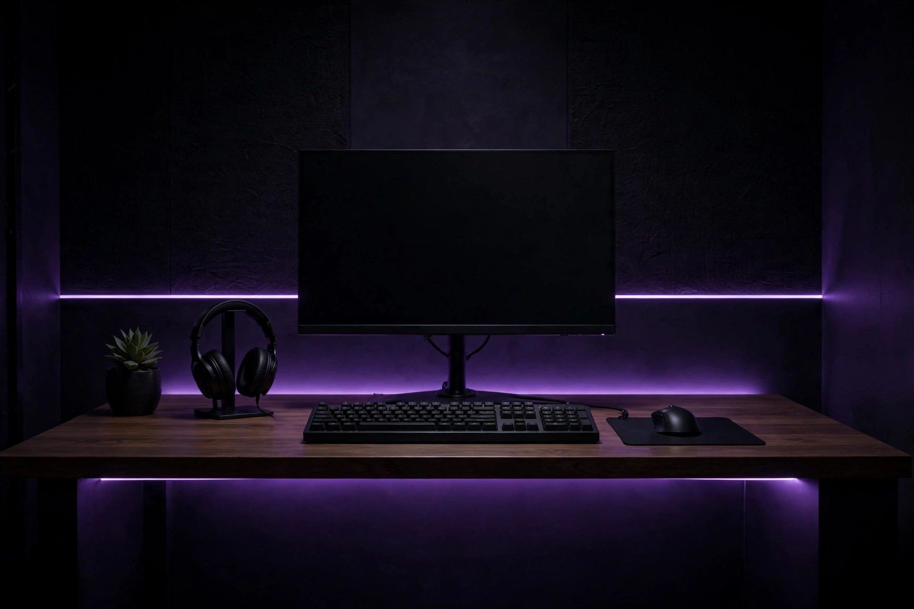
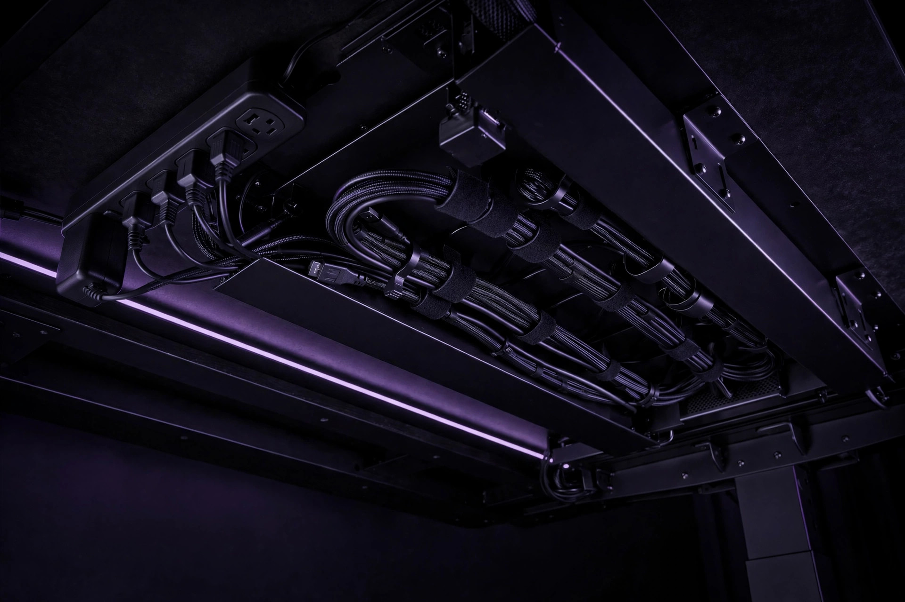

Budget gaming desk setup: ergonomics, monitor placement and cable management

Most desk-setup advice starts with shopping: a new desk, a monitor arm, a tray, a kit. The order is backwards. Comfort at a desk comes from the relative positions of a chair, a surface, a screen and your body — and most of those positions can be corrected with the furniture already in the room, in under an hour, for no money at all. This guide works in the order the body notices problems: chair first, desk second, monitor third, keyboard and mouse fourth, and cables last, because tidy cables on a badly placed screen are just tidy cables. Every measurement below comes from occupational-health guidance or gaming-ergonomics sources, and where sources differ slightly, the range is given rather than a false precision. This is general information about desk setup, not medical advice; persistent pain deserves a professional, not a product.
Set the chair first: the ordered setup procedure
The chair is the reference point for everything else, because the desk and screen should be fitted to your seated body — not the other way round. Work through these steps in order, and do not skip ahead: each step assumes the previous one is settled.
- Set the chair height. Sit with your feet planted flat on the floor and your thighs roughly level. If the chair will not go low enough for your feet to rest flat, a footrest — or any stable household equivalent — is the standard fix, not a taller desk.
- Bring the desk to your elbows. With your shoulders relaxed, your forearms should rest roughly parallel to the floor with elbows bent at about 90 to 100 degrees. On a fixed-height desk, adjust the chair to approach that elbow position and re-check your feet afterwards; the two steps iterate once or twice on most setups.
- Check your knees and legs. Knees should sit at roughly 90 degrees with room to move under the desk. If the underside is blocked by drawers, a tower or stored boxes, clear it — leg room is part of the setup, not storage.
- Place the keyboard and mouse on the same level, close together. The mouse belongs within easy reach beside the keyboard — guideline tables put it within about 15 to 25 centimetres — so the shoulder stays relaxed instead of reaching outward all session.
- Only now place the monitor, using the next section. Placing it earlier guarantees placing it twice.
Success looks like this: shoulders down and relaxed, wrists straight rather than bent up or down, feet supported, and no part of the setup requiring a lean, a reach or a raised shoulder to use. If any of those is present, the step that owns it — not a new purchase — is where the fix starts.
Monitor placement: height, distance and the second screen
The Canadian Centre for Occupational Health and Safety (CCOHS) gives the core rule in one line: the monitor should sit about an arm's length away, at eye level or slightly lower. Gaming-ergonomics tables put numbers on the same ideas, and a Canadian ergonomics checklist lands in the same place, so the targets below are consistent across independent sources.
| Component | Guideline | Why it matters |
|---|---|---|
| Monitor distance | About an arm's length — roughly 50–80 cm, or 20–30 inches | Reduces eye strain and lets the whole screen be seen without head movement |
| Monitor height | Top edge of the screen at eye level or slightly below | Keeps the neck neutral, with a slight downward gaze |
| Elbow angle | About 90–100 degrees, forearms parallel to the floor | Minimizes shoulder and arm strain |
| Wrist posture | Straight, not bent up or down | Reduces strain during long sessions |
| Mouse position | Within about 15–25 cm of the keyboard, same height | Avoids over-reaching and a raised shoulder |
| Knees and feet | Knees around 90 degrees, feet flat or on a footrest | A stable base for everything above it |
For a typical 27-inch screen, one setup guide's working range of about 20 to 28 inches matches the arm's-length rule well. If text feels small at that distance, enlarge the text or interface scale rather than pulling the screen closer — the distance is doing ergonomic work, and the font size is free to change. Height is the adjustment budget gamers most often skip: a fixed monitor stand that sits too low is the one case where a small purchase genuinely helps, because a monitor arm frees the stand's footprint and makes height adjustable in minutes. Check two figures before buying any arm — the mounting pattern (VESA) and the weight rating against your actual panel. A stack of sturdy books under the stand, ugly as it is, achieves the same height correction today while the arm waits for a sale.
A second monitor follows a simple rule from the same occupational guidance. Decide honestly which screen you use more. The primary screen goes directly in front of you, exactly as a single monitor would; the secondary screen sits to one side, at an angle, at the same height and roughly the same distance, forming half of a shallow semi-circle. Gaming tables put that inward angle at roughly 15 to 30 degrees. Only when both screens are genuinely used equally should you centre yourself between them — centring on the gap between two screens while actually living on one of them is a reliable way to spend every session with a turned neck.
Keyboard, mouse and the small angles that add up
With the screen placed, the input devices take five minutes. Keyboard and mouse sit at the same height, close to the desk edge, so the forearms do not reach forward. Wrists stay straight and roughly in line with the forearms — bent sharply upward over a tall desk edge is the posture to eliminate, and it is usually a chair-height problem in disguise, which is why the chair came first. Keep the area in front of the keyboard clear enough that the mouse can travel without the hand colliding with mugs, phones and controllers; on a small desk, moving clutter is the entire upgrade.
Two habits cost nothing and are recommended in the occupational checklists. Follow the 20-20-20 pattern for your eyes: every 20 minutes, look at something about 20 feet away for 20 seconds. And break up sitting itself — getting up for at least a minute every 30 to 45 minutes is the checklist-level guidance. Neither requires equipment, an app or a standing desk; a phone timer is the whole system. Treat both as part of the setup, because a perfectly placed monitor in front of an unmoving body is only half an ergonomic result.

Cable management as a procedure, not a shopping list
Cable guides tend to be product catalogues. The useful content underneath them is a procedure, and it works with a handful of reusable ties and one tray at most:
- Power everything down and unplug at the wall. Work on a dead setup; you will be handling a power strip and its cables throughout.
- Audit before you tidy. Pull every cable, and set aside anything connected to nothing. Desks accumulate orphan chargers and duplicate leads, and tidying a cable that does not need to exist is wasted effort.
- Mount one surge-protected power strip under the desk, in a tray or on clips rated for the weight — where cables bunch at the strip, screwed-in clips hold better than adhesive alone. Desktop devices then need only short runs to the underside, and a single lead runs from the strip to the wall outlet.
- Route power and data in separate bundles along the back edge of the desk, using cable clips to stop leads sliding forward into the workspace. Label both ends of each cable with tape as you go; the label is for the next time something is unplugged, which is when untidy desks extract their revenge.
- Bundle with reusable hook-and-loop ties, not single-use zip ties. Reusable ties can be readjusted without cutting, and they are gentler on cable insulation — a practical point on cables that will be moved again at the next upgrade.
- Leave service slack everywhere. Allow at least 30 to 40 centimetres of extra length beyond the measured run on any cable that might move — and on a fixed desk, leave enough slack at the computer tower that it can be pulled out for cleaning or a drive swap without unplugging the whole desk. A taut cable is a future accidental unplug.
- Sleeve the vertical drop. The run from desk to floor is where tangles visibly start; a simple zipper sleeve gathers it into one intentional-looking bundle, and sleeves can join end to end on longer drops.
- Reconnect, then test the full range of movement: chair rolled back, tower pulled forward, monitor arm swung if you have one. Success looks like nothing pulling tight, nothing sliding off the desk, and every cable still identifiable from its labels.
The priority framework: free fixes first, purchases last
- Free, today: the chair-desk-monitor ordering above, monitor distance and height using whatever stable riser is already in the house, clutter removal for mouse travel, the cable audit, labels, and the break habits. This tier solves the majority of desk discomfort and all of the cable chaos that is really just orphan cables.
- Cheap, when a specific problem remains: reusable ties, back-edge clips and one under-desk tray with a surge-protected strip — bought to execute the procedure, in that order, not as a kit bought in hope.
- Only if the geometry demands it: a monitor arm, justified when the stand cannot reach the height target and a riser is impractical — after checking its mounting pattern and weight rating against the panel. A new desk is the last resort, bought for depth or stability the current desk genuinely lacks, never as the first response to a badly placed chair.
Frequently asked questions
How far should a gaming monitor be from your eyes?
About an arm's length — roughly 50 to 80 centimetres, or 20 to 30 inches in the checklists. If text looks small at that distance, increase the text or interface size rather than moving the screen closer.
Should the monitor be at eye level?
The top edge of the screen should sit at eye level or slightly below, per the CCOHS guidance, so the gaze drops slightly and the neck stays neutral. Screens perched well above eye level are the common error.
Do cable trays actually matter, or are they cosmetic?
Both functions are real but separable. The procedure — one under-desk strip, separated bundles, slack, labels — does the functional work of preventing taut cables and mystery unplugs. A tray mostly makes the result look finished and keeps the strip off the floor; it is the last step of the procedure, not the first purchase.
What if the desk is too shallow for arm's-length distance?
That is the one geometry problem posture cannot fix, and it is the honest case for a monitor arm, which can hold the screen partly beyond the desk's back edge, or eventually for a deeper desk. Until then, sit as far back as the desk allows and enlarge on-screen text to compensate.
Desk setup checklist
- Are your feet flat (or on a footrest) and your thighs roughly level?
- Are your forearms parallel to the floor, elbows near 90–100 degrees, shoulders relaxed?
- Is the top of the screen at or just below eye level, about an arm's length away?
- Is the primary monitor directly in front of you, with any second screen angled in at the same height?
- Is there one power strip under the desk, with only one lead to the wall?
- Does every cable have slack and a label at both ends — and did the pull-out test pass?
Our take: Set the chair, fit the desk to your elbows, place the screen by the numbers, then tidy cables with slack and labels. Almost everything that makes a gaming desk feel wrong is a position problem wearing a shopping costume — fix the positions first and let any purchase prove it is still needed.